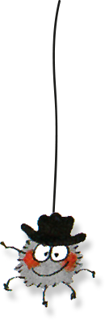

Hi there,
I am Timo
Activearker since November 2009
Senior Drupal Developer
/**
* Helper function to locate our filter value in the
* $_SESSION['node_overview_filter'] array.
*
*
* @return int|null
* A string value representing the timestamp to begin searching content for.
*/
function _find_kc_content_filter_value() {
// Validate that the values are set.
if (!isset($_SESSION['node_overview_filter'])) {
return;
}
// Initialize output.
$value = NULL;
// Loop over filters to find ours.
foreach ($_SESSION['node_overview_filter'] as $k => $v) {
// Skip other filters.
if ('updated' !== $v[0]) {
continue;
}
// Set the return value once found and break loop.
$value = intval($v[1]);
break;
}
return $value;
}
Clients including
- NSN/Nokia Networks
- Nokia
- Konecranes
- Koskisen
- Aditro
- ...
Me in Person
Random facts
Middle-aged
(35 years old next year!?)
Shoe size 47
(makes it easier to stand)
Has a sister
(and a 9 years old niece)
Loves to cook
(but is allergic to seafood)
Played ice Hockey
(for 12 years)

Has arachnophobia
(is afraid os spiders)
From Helsinki and back there
(Places I have lived in)
Born in Kruununhaka, Helsinki 1980
Vantaa in 1986
Nurmijärvi in 1999
Tampere in 2002
Back to Helsinki in 2004
Kallio since 2004 with my girlfriend Kati
School?
Highschool (lukio) 1996-2003
(yes it took 7 years to finish it)
Bachelor of Business Administration in ICT 2004-2009
Haaga Helia University of Applied Sciences
Work before AAJWT
Mainonnan suunnittelija, Ad Tell Oy
(my first ever paycheck, year 1987)
Hamburger guy / vuoropäällikkö at Hesburger Nurmijärvi
1998-2001
Salesman at Mediapuhelin, a mobile phone shop
2002-2006
Freelance web developer / SolveIT Finland
2005-2008
Web development / testing / documentation at YLE
2008-2009
Activeark JWT, that Drupal guy
2009->
Oh, and I'm a Dad

Hobbies and interests
Sports
I try to keep fit
Including
Floorball
Ice-hockey
Snowboarding
Football
Jogging/running
Boxing (savate)
Cameras
I like old cameras


and a DYI cardboard replica (ca. 2011)


Photography
I like to take pictures with old cameras


(a matchbox pinhole camera experiment)


Learn more:
kirkkala.com
flickr.com/kalak